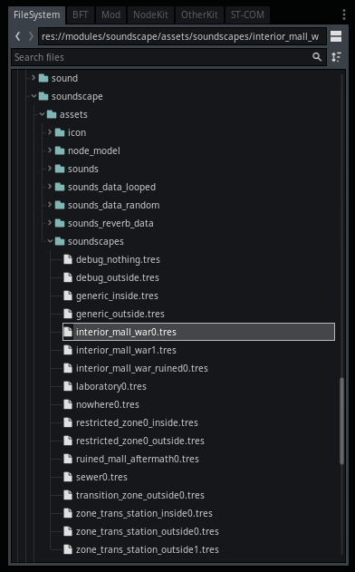
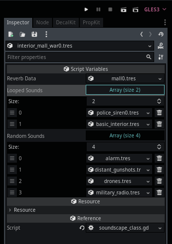

Module: soundscape
Documentation last edited: October 23, 2025 at 14:33 UTC
Description
Итак, что такое "саундскейпы" (soundscapes)? По сути, это просто более модное слово для атмосферных звуков. В этом проекте "саундскейпы" - это просто способ структурировать данные для атмосферы. Это включает зацикленные аудио сэмплы *и* аудио сэмплы, которые проигрываются случайным образом на протяжении игры. Разные саундскейпы могут использоваться для разных окружений: интерьеров, экстерьеров, внешних миров, в небесах и т.д. Ты действительно можешь сделать что угодно с их помощью... Пока у тебя есть какой-никакой опыт в саунд-дизайне, ты свободен делать всё, что пожелаешь.


Эта страница документации читается слишком нормально, и мне нужно найти способ это испортить... Ой, подожди, я только что это сделал. В любом случае...
Создание собственного саундскейпа
Все саундскейпы хранятся в
"res://modules/soundscape/assets/soundscapes/"
как
SoundscapeClass
.

SoundscapeClass
содержит всю необходимую тебе информацию, а именно... Данные реверберации, массив зацикленных сэмплов и массив случайных сэмплов. Данные реверберации - это просто пресет для настроек реверберации/эха. Массивы должны быть понятными.

"res://modules/soundscape/assets/sounds_reverb_data/"
содержит файлы ресурсов
SoundscapeReverbData
, которые настраивают упомянутые ранее реверберацию и эхо.
"res://modules/soundscape/assets/sounds_data_looped/"
содержит файлы ресурсов
SoundscapeLoopedSound
, которые настраивают зацикленный сэмпл - всё об аудио сэмпле, громкости, высоте тона, ценность, техническом долге...
"res://modules/soundscape/assets/sounds_data_random/"
содержит файлы ресурсов
SoundscapeRandomSounds
, которые настраивают набор случайных сэмплов - всё о самих аудио сэмплах, мин./макс. громкости, мин./макс. высоте тона, местоположении людей-ящериц...
Все ноды
Soundscape
содержат имя класса саундскейпа для воспроизведения, которое является просто именем файла ресурса
SoundscapeClass
, хранящегося в
"res://modules/soundscape/assets/soundscapes/"
. Ты просто создаёшь ноду, назначаешь имя саундскейпа и наслаждаесь атмосферой своего личного адского храма.
General Information
Root directories list
assets, docs, src
Nodes
Classes
None
Resources
SoundscapeClass
SoundscapeRandomSounds
SoundscapeLoopedSound
SoundscapeReverbData
Other Scripts
None